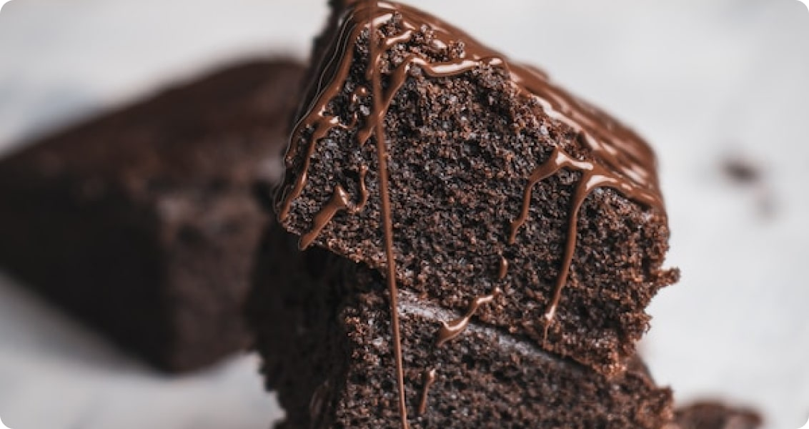

|
|---|
Chocolate Cheese MuffinsToday’s chocolate cheesecake muffin recipe is not for the faint of heart. Anyone who sees the above picture (or reads the title) and feels the urge to comment “too much sugar” or has a history of leaving scathing review regarding unhealthy breakfast habits… I think they’re going to want to sit this one out. Chocolate Cheese Muffins
Lots of ingredients you’re probably already familiar with, but let’s go over a few of the key players and why they’re so important to this recipe (and a few substitution notes). Read more recipe |

© Food Inc.23460 Harley Knox, Boriss, CA 92570 USA |